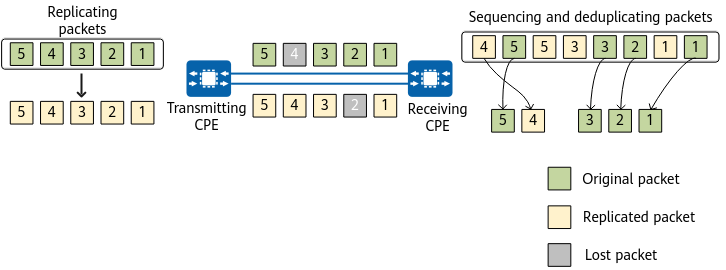

Packet Replication Process
Figure 1 shows the packet replication process.
Figure 1 Packet replication process
- The transmitting CPE identifies service packets for which the packet replication function has been enabled. Then, it encapsulates the packets with reassembly and sequencing information (reassembly header), such as the packet ID and timestamp.
- The transmitting CPE replicates the original packets, encapsulates the replicated packets with reassembly header information (such as the packet ID and timestamp), and sends the replicated packets over another link.
- If the network quality is poor, original packets and replicated packets may be lost during transmission.
- The receiving CPE sequences and deduplicates the received original packets and replicated packets:
- The CPE sends the packets that arrive first in the correct sequence to the destination terminal, and discards subsequent duplicate packets directly.
- If some packets are lost, the CPE buffers and sequences the packets that arrive first. When the packets with the same sequence numbers as the lost packets on the other link arrive, the CPE sends all the packets to the destination terminal in the correct sequence.